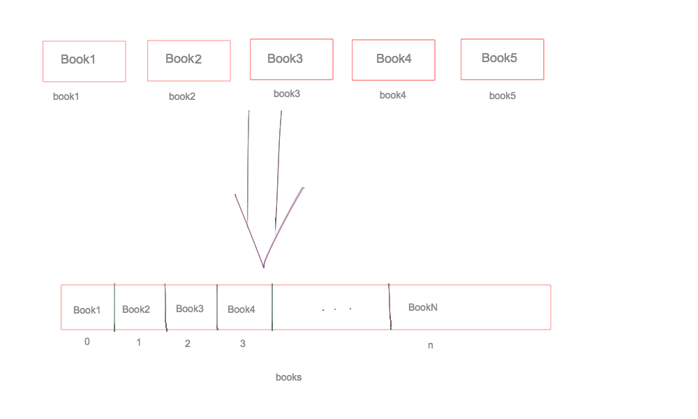

Массивы и базовые методы работы с ними
 Илья Афанасов PwC
Илья Афанасов PwC
Афанасов Илья, PwC
Илья Афанасов PwC
Senior Web-Developer в PwC
Что мы получим в результате исполнения такого кода?
let duration = 1;
let myString = '';
myString += 'внимание!'.toUpperCase();
myString += ' Проверяем усвоенный ';
myString += duration;
myString += ' неделю назад материал! Вах!'.toLowerCase().substr(0, 22);
console.log(myString);
Мы увидим в консоли сообщение:
'ВНИМАНИЕ! проверяем усвоенный 1 неделю назад материал!'
Мы инициализировали переменную myString пустой строкой, а далее добавляли по-разному отформатированные строки в нее. Затем с помощью substr вырезали часть строки и вывели результат в консоль.
Как правило, в приложениях мы имеем много (а иногда даже очень много) данных.
Предположим, что у нас в магазине есть 100 разных книг. Один из вариантов - хранить имя каждой в своей переменной.
Но гораздо проще объединить их всех в какую-то общую переменную. В этом нам и помогут массивы:
У каждой «единицы» данных в массиве есть свой порядковый номер. Он называется индексом. Нумерация индексов начинается с нуля.
// это может по началу быть непривычным, но в данном примере
// "первый" будет иметь индекс 0, "второй" - индекс 1, а "третий" - 2
let arr = ["первый", "второй", "третий"];
Во многих языках программирования данные в массивах должны быть одного типа и размер часто задается заранее. В JS все намного веселее - тип данных может быть любой и в любой момент мы можем добавить сколько угодно данных в существующий массив.
let array = [1, 2, 3, 'четыре', true, false];
array[6] = 'еще один элемент';
console.log(array);
Что нам стоит знать для начала:
[]);[1, 2, 4], ['Маша', 'Паша']);
let arr = [1, 2, 3];
let arr2 = [];
arr2[0] = 'Маша'; // про этот трюк мы еще поговорим
console.log(arr, arr2);
Чтобы прочитать элемент из массива, нужно указать его индекс в квадратных скобках после имени массива:
let arr = ['первый', 'второй', 'третий'];
console.log(arr[0], arr[1], arr[2]); // 'первый', 'второй', 'третий'
Это как раз часть того самого «трюка», о котором мы только что говорили - arr2[0]
А вот и вторая часть «трюка». Вы можете не только читать, но и изменять любой элемент массива по его индексу:
let arr = [1, 2, 3];
arr[0] = 33;
console.log(arr); // [33, 2, 3]
console.log(arr[1]); // 2
// а вот и новый трюк - но можно догадаться, что
// таким образом мы получаем длину массива
console.log(arr.length); // 3
let array = ["привет", "Здравствуйте", "Добрый вечер"];
let arrayTwo = [1, 2, 3];
array[2] = arrayTwo;
console.log(array); // ???
Мы получили массив, одним из элементов которого является другой массив.
let array = ["привет", "Здравствуйте", "Добрый вечер"];
let arrayTwo = [1, 2, 3];
array[2] = arrayTwo;
console.log(array); // ["привет", "Здравствуйте", [1, 2, 3]]
Для доступа к элементу вложенного массива нам потребуется два индекса: первый — чтобы добраться до вложенного массива и второй, чтобы получить из него элемент:
console.log(array[2][0]); // 1
Все значения в JavaScript, за исключением null и undefined, содержат набор вспомогательных функций и значений, доступных «через точку».
Такие функции называют «методами», а значения – «свойствами».
Свойства говорят о текущем состоянии массива, а методы — выполняют наши команды.
Именно поэтому мы смогли так легко узнать длину нашего массива (arr.length). Если помните — у строк тоже есть такой метод-помощник.
Иногда мы знаем элемент, но не знаем его индекс. Найти индекс можно с помощью метода indexOf. Важный нюанс - если одинаковых элементов в массиве несколько, то по умолчанию найдется только первый.
let arr = [1, 2, 3];
// получим 1 - не забываем, что нумерация начинается с нуля
console.log(arr.indexOf(2));
Рассмотрим основные методы, которые помогают нам манипулировать массивами, не обращаясь непосредственно к индексам.
Работать с методами удобно, когда нам нужно часто и много изменять изначальный массив.
let books = ['Книга 1', 'Книга 2', 'Книга 3'];
/** допустим нам нужно добавить 100 книг в наш массив */
// с помощью конструкции "books[books.length] = any;"
// мы добавляем элемент в конец массива
books[books.length] = 'Книга 1';
books[books.length] = 'Книга 2';
books[books.length] = 'Книга 3';
// ...
books[99] = 'Книга 100';
Задачу мы решили, но слишком уж сложно, не находите?
Представьте, что массив - это генерал вашей армии, а обилие всех его методов - это подвластное ему войско. При этом каждый метод - это солдат со своими уникальными способностями.
Так вот. Каждый метод-солдат делает что-то с данными и докладывает результат своей работы (если говорить скучным техническим языком - возвращает какое-то значение). Его можно сохранить в отдельную переменную и переиспользовать далее в программе, а можно проигнорировать.
Как работают методы/функции мы еще разберем более подробно в следующих лекциях, но сейчас важно понять, что возвращаемый результат и модификации массива - это две разные вещи, происходящие «под капотом».
Добавляет элемент(ы) в конец массива, возвращает текущую длину массива:
let arr = [];
arr.push(1, 2, 3); // 3
arr.push(11); // 4
console.log(arr); // [1, 2, 3, 11]
console.log(arr.length); // 4
Удаляет элемент с конца массива, возвращает этот самый элемент:
let arr = [1, 2, 3, 11];
arr.pop(); // 11
console.log(arr); // [1, 2, 3]
console.log(arr.length); // 3
Удаляет элемент из начала массива, возвращает этот самый элемент:
let arr = [1, 2, 3];
arr.shift(); // 1
console.log(arr); // [2, 3]
console.log(arr.length); // 2
Добавляет элемент(ы) в начало массива, возвращает текущую длину массива:
let arr = [2, 3];
arr.unshift(9, 16, 25); // 5
arr.unshift(36); // 6
console.log(arr); // [36, 9, 16, 25, 2, 3]
console.log(arr.length); // 6
Часто возникает необходимость превратить строку в массив или наоборот - склеить массив в строку. Для этого у нас есть помощники, которыми легко пользоваться:
join
split
let arr = ['Мы', 'хотим', 'быть', 'одним', 'предложением'];
arr.join(' '); // "Мы хотим быть одним предложением"
'банан,клубника,молоко'.split(','); // ["банан", "клубника", "молоко"]
Часто нам бывает нужно сделать копию данных или же получить какую-то часть исходного массива, не вызывая pop/shift много-много раз. В этом нам помогут следующие методы:
slice
splice
concat
Давайте посмотрим на примерах как это работает.
Метод slice(begin, end) копирует участок массива от begin до end, не включая end. Исходный массив при этом не меняется. Если не указать end, то копируем до конца массива.
let arr = ['Почему', 'не', 'надо', 'учить', 'JavaScript'];
let arr2 = arr.slice(0, 1); // только 1-ый элемент
let arr3 = arr.slice(2); // все элементы, начиная со второго
console.log(arr2, arr3); // ['Почему'], ['надо', 'учить', 'JavaScript']
Метод splice – это универсальный раскладной нож для работы с массивами. Умеет все: удалять элементы, вставлять элементы, заменять элементы – по очереди и одновременно.
Пока достаточно освоиться с удалением.
let arr = ['Я', 'изучил', 'изучаю', 'JavaScript'];
arr.splice(1, 1); // начиная с позиции 1, удалить 1 элемент
alert( arr ); // осталось ['Я', 'изучаю', 'JavaScript']
Метод arr.concat(value1, value2, ... valueN) создаёт новый массив, в который копируются элементы из arr, а также value1, value2, ... valueN.
let arr = ['Почему'];
let merged = arr.concat(['надо', 'учить', 'JavaScript']);
// помните метод join из лекции про строки?
// в результате получим 'Почему надо учить JavaScript'
console.log(merged.join(' '));
Давайте посмотрим ваше домашнее задание.
learn.javascript.ru
learn.javascript.ru
learn.javascript.ru
learn.javascript.ru, опять же по традиции.
Спасибо за внимание! Время задавать вопросы
Илья Афанасов